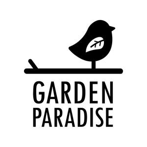

Trade Mark Journal No.2025/016 18 April 2025
UK00004182484 1 April 2025 (6,19,20,21,31)

- Class 6
- Bird baths of metal; metallic bird baths; metal animal feeders; metal stands for feeders; metal cages to protect feeders; ground guards; poles of metal, extendable poles of metal; poles, hooks, hanging chains, tree hooks; brackets; metal hooks for use with metal feeders; collets for use with garden poles; hooks for collets; compost bins of metal; metal wildlife silhouette works of art; parts and fittings for the aforesaid goods.
- Class 19
- Houses for animals, insects, birds; transportable buildings, not of metal; stone and ceramic baths for birds, animals and insects.
- Class 20
- Nesting boxes; nest box assembly kits; bat boxes; hedgehog nest boxes; containers for food for wild animals; animal housing and beds; bird and animal feeding tables; compost bins; insect houses; part and fittings therefor.
- Class 21
- Feeders; feeder assembly kits; cages for carrying pets; bird baths; bird feeders; animal feeding apparatus; containers and utensils for bird animal food; small domestic containers and utensils; non-metallic water baths for birds, animals and insects; non-metallic feeders for birds, animals and insects; non-metallic stands for feeders; non-metallic cages to protect feeders; food scoops; cleaning brushes; feeder trays; containers for food for birds, animals and insects; feeding bowls and dishes for birds, animals and insects; drinking vessels for birds, animals and insects; hanging water dishes; ceramic water dishes; fly traps; traps for insects and vermin; watering cans; mugs; drinking vessels; non-metallic containers for insects with view finder; food trays and food bowls of metal of metal; candelabra arms; bird tables; reptile and amphibian habitats; parts and fittings for the aforesaid goods.
- Class 31
- Agriculture, horticulture and forestry products; food for birds, garden mammals, garden animals and insects; animal forage; litter for birds, animals and insects; seeds; seed mixes; peanuts, fat balls, fat blocks, peanut butter for birds; bulbs; trees and shrubs; live plants and flowers; dried plants and flowers; flower, vegetable and fruit seeds.
C J Wildbird Foods Limited
Representative: Withers & Rogers LLP